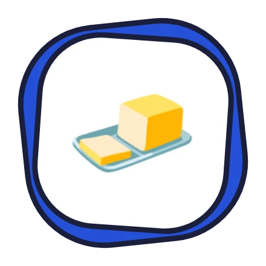

소금빵
요즘 뭐가 좋은지 제일 먼저 아는 사람
이 유형이 나온 정도
-
낮게 나왔다면 여러 빵의 성격을 조금씩 가진 사람이에요
당신은 새로운 걸 빨리 알아보고 빨리 즐겨요. 뜨는 가게, 유행하는 말, 재밌는 영상을 제일 먼저 가져오는 사람이죠. 겉은 바삭하게 쿨하고 속은 촉촉하게 다정해서 주변에 사람이 많아요. 다만 유행이 지나가듯 관심도 금방 옮겨 가서 진득하게 하나를 붙잡기는 어려워해요.
이런 특징이 있어요
- 새로 생긴 곳은 일단 가 봐야 함
- 단톡방에 재밌는 걸 제일 먼저 올림
- 처음 본 사람과도 금방 친해짐
📖 이 결과에 대해 조금 더
빨리 아는 것도 실력이에요
소금빵은 단순해 보여도 굽는 타이밍이 전부예요. 당신도 무엇이 좋은지 알아채는 타이밍이 빠른 사람이에요. 그 감각 덕분에 주변 사람들은 늘 새로운 걸 경험해요.
이 빵에게 필요한 한 가지
올해 좋아한 것 중 하나만 골라 석 달 붙잡아 보세요. 넓게 아는 사람이 하나를 깊게 알면 훨씬 단단해져요.
같은 접시에 놓으면 좋은 빵은?
⚠️ 이 테스트는 재미로 즐기는 콘텐츠이며 전문적인 심리 진단이 아니에요.